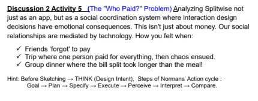

Norman’s Action Cycle to User Interfaces(Toggle Switch (Wi-Fi ON/OFF))
The table demonstrates how a very simple interface (Wi-Fi ON/OFF switch) supports human
thinking and action step-by-step, following Don Norman’s action cycle. Each stage links
a user’s mental process with an HCI principle. We also performed Gulf analysis on this task.
In this week we had a analysis on this table and we gave our feedback of what changes could be made on this table.
Source ~(Worksheet from Week 3)


Norman’s Action Cycle to Dose Calculator Interface (Automatic Syringe)
This task was given as a test in which we were required to define the correct steps of Norman’s Action Cycle
for the process of filling a syringe. We were also asked to identify the design problems present in Norman’s dose calculator.
Through this analysis, we were able to identify the Human–Computer Interaction (HCI) principles that were violated, showing
the importance of usability, feedback, visibility, and error prevention in interface design.Source ~(Worksheet from Week 3)
The "WHO PAID!!" Problem
The “Who Paid?” problem analyzes Splitwise not just as a financial app, but as a social coordination
system where interaction design directly affects emotions and relationships. Situations like forgotten
payments, group trips, or long bill-splitting delays show how poor design can cause confusion, frustration,
and social tension. Using Norman’s Action Cycle (Goal → Plan → Specify → Execute → Perceive → Interpret → Evaluate),
the analysis explains how users aim to fairly record expenses, plan steps to add them, execute actions through visible controls,
and rely on clear feedback to understand balances. When visibility or feedback is weak, the gulfs of execution and evaluation widen,
leading to mistrust and errors.Source ~(Worksheet from Week 3)
